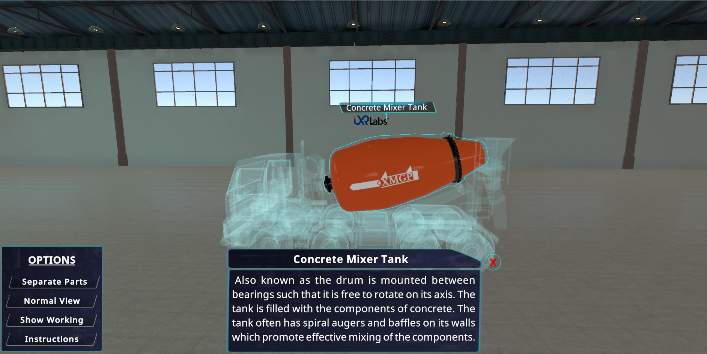

Teaching about the inner workings of concrete mixers might seem like a straightforward endeavor to most. After all, how complicated can it be to explain a revolving drum that mixes cement, water, and aggregates?
Quite intricate, as any engineering professor would attest.
While the foundational principle is simple, understanding the nuances, mechanics, and precision needed for effective concrete mixing is a challenge, especially when trying to impart that knowledge to students.
And, the question arises, how can the next generation of engineers and construction professionals truly understand its intricate workings?
In this blog, we'll explore five innovative methods educators can employ to elucidate the complexities of concrete mixers from the complex structure to the concrete mixer working.
Experience it through Virtual Reality (VR)
The power of VR in education has been increasingly recognized in recent years. While fields like medicine using VR for teaching human anatomy or power generation, using VR for teaching thermal power plant operations have been early adopters, its potential in teaching mechanical operations is vast.
☑️ Interactive Dissection
The traditional teaching of machinery often involves static diagrams, 2D representations, and sometimes, physical models.
But with platforms like iXR Labs, we're taking a quantum leap.
Professors can now grant their students a 360-degree exploration license of machinery, virtually. This transcends standard observations. Students can "dismantle" a concrete mixer truck, peeling it layer by layer, and exposing its internal machinery.
It's akin to a guided tour where every component can be zoomed in on, examined, and understood in context. Such visual and interactive pedagogy can bridge the chasm between theoretical knowledge and practical understanding.
☑️ Simulated Operation
Mechanical education isn't just about understanding the parts but also grasping their symphony in operation.
VR provides an immersion where students can don the mantle of an operator. They can modulate the mixer's speed, decide the sequence of ingredients, and even troubleshoot issues – all with intuitive virtual gestures to see how cement mixers work.
Witnessing the ballet of cement, water, and aggregates coming together, adjusting to changes introduced by the student, not only educates but enthralls.
This immersion ensures that the learning experience is not just retained but relished.
☑️ Virtual Field Trips
Why restrict students to a classroom when VR can transport them to bustling construction sites or state-of-the-art manufacturing facilities? These virtual excursions can give students a firsthand view of how cement mixers work, allowing them to correlate their virtual experiments with real-world applications.
☑️ Safety and Risk Management
In the real world, mistakes can be costly.
But in the cushioned environment of VR, errors become invaluable lessons. Students can be presented with simulated challenges – maybe a malfunctioning mixer or an incorrect mixture ratio. They can then attempt solutions, analyze results, and iterate, all without real-world repercussions.
☑️ Collaborative Learning
VR platforms, especially those tailored for education, can foster collaboration. Students can team up in the virtual realm, working together on tasks, discussing components, or even competing in mixer-related challenges. Such interactions not only reinforce learning but also hone teamwork and communication skills.
This means, teaching concrete mixing module or teaching turbofan jet engines, is now easier with immersive learning.
 Get the App from Meta Store: Download Now
Get the App from Meta Store: Download Now
Augmented Reality (AR) Overlays
While VR places students in a completely virtual environment, AR seamlessly blends the tangible with the intangible, embellishing our direct perception of the real environment with superimposed digital elements. Especially when it is about teaching concrete mixing module, the potential of AR is nothing short of revolutionary.
☑️ Real-time Annotations
Picture this - a student stands next to a full-scale concrete mixer in an immersive engineering setting. As it rumbles and rotates, their AR glasses or dedicated applications on their mobile devices spring to life.
Labels pop up in real-time, pointing out the intricate parts of the mixer, detailing their functions, materials, and even maintenance schedules, providing a concrete immersive engineering experience.
☑️ Animated Processes
The opaque exterior of a concrete mixer often hides its most intriguing processes.
But with AR, this no longer remains a limitation.
Animated sequences can be triggered, showcasing the internal journey from the pouring in of raw materials to the churned, ready mix. As aggregates tumble and mix with cement and water, students can witness simulated visuals of the blending process, breaking down complex mechanical and chemical interactions into digestible snippets.
☑️ Interactive Troubleshooting
Another fascinating application of AR is in the domain of problem-solving. Students could be presented with a 'malfunctioning' virtual mixer.
Through AR, they identify issues, ranging from jammed components to imbalanced mixes. As they spot these problems, they can pull up potential solutions, watch repair tutorials, or even simulate fixes, all while being anchored in the real world.
☑️ History and Evolution Overlay
The concrete mixer of today is a product of continuous evolution. With AR, as students inspect a modern mixer, they can access overlays showing previous versions of the machinery, understanding design changes, technological advancements, and the reasons behind them.
☑️ Comparative Analysis Tool
Why stop at one mixer?
With AR, students can juxtapose various mixer designs, sizes, and brands side by side. This comparative tool can help them discern differences, advantages, and specific applications of each design, fostering a deeper, more comprehensive understanding.
Hands-on Workshops with Scale Models
Teaching engineering through modern technology is not the only solution. Sometimes, a tactile experience is irreplaceable. Understand the idea below-
☑️ Model Demonstrations
There's a unique charm in physically deconstructing and reconstructing tangible models.
By employing scale models of concrete mixers that are designed for hands-on interaction, students can dissect each component, analyze its purpose, and relate to its functioning in the entire machinery.
As they manipulate these models and connect them with their theoretical studies, the understanding deepens, creating a sturdy foundation, much like the concrete they're learning about.
☑️ Mixing Exercises
Engaging in a mixing exercise can be as fun as it is enlightening. Using compact tabletop models, students can get playful, tweaking mix ratios, testing out different rotation speeds, and adjusting mixing durations. The immediate tangible results from these experiments allow them to observe and deduce the science behind the process.
Integrative Digital Learning Platforms
The digital revolution in education extends beyond AR and VR. Online platforms offer a blend of teaching methods to cater to varied learning styles.
☑️ Interactive Simulations
Borrowing a leaf from the world of gaming, students can immerse themselves in virtual concrete mixing scenarios. Adjusting variables, predicting outcomes, and witnessing the virtual reactions to their actions can be both engaging and informative.
☑️ Teaching Through Storytelling

Everyone loves a good story, and when it's intertwined with educational content, it can make learning unforgettable. Crafting narratives that hinge on construction challenges, and weaving in the workings of concrete mixers as the solution, can captivate students' attention, making them invested in the learning journey.
☑️ Quizzes and Challenges
Assessing understanding is crucial. Digital platforms have the advantage of providing real-time quizzes with immediate feedback. This not only tests students' grasp of concepts but allows them to rectify and learn from their errors instantly.
Field Trips Reinvented
Visiting construction sites and witnessing concrete mixers in action is a time-tested teaching method.
But, what if we add a twist?
☑️ Guided Tours with Wearable Tech
Field trips can transcend passive observation. When students wear tech devices, such as smart glasses, these devices can overlay real-time data, diagrams, or animations onto the working machinery they're observing. This augmented field trip provides an enriched, multi-layered perspective, marrying real-world observation with insightful data.
Interaction with Operators
A Q&A session with the actual operators of concrete mixers can offer invaluable on-ground insights. Sometimes, the nuances picked up from these interactions can be more enlightening than textbook knowledge.
Conclusion
In conclusion, the education landscape, especially in intricate subjects like teaching the workings of concrete mixers, is evolving.
With technology like VR and AR, platforms like iXR Labs, and an emphasis on hands-on experiences, the horizon looks promising. The goal remains constant, i.e., to bridge the gap between theoretical knowledge and practical understanding, ensuring that the next generation of engineers is well-equipped to take on real-world challenges.
The journey, however, is more interactive, engaging, and innovative than ever before.
%20(1).png)